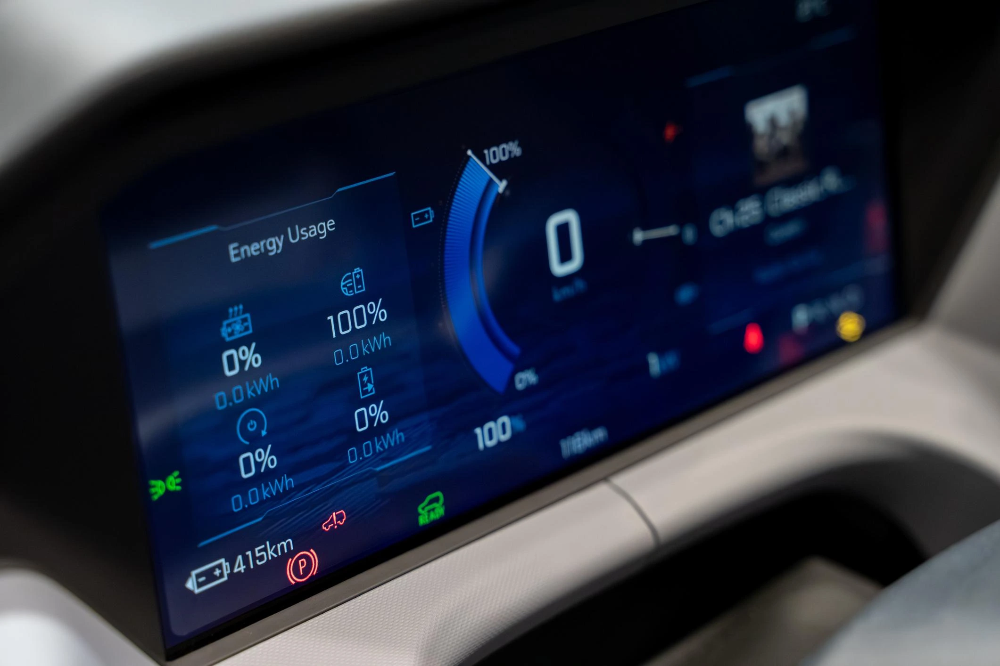

The Gap Between Certified Range and Real-World Use
The official range figure of an electric vehicle is one of the most quoted numbers in automotive marketing, yet it is also one of the least understood, particularly in the context of UK driving conditions. As EV adoption accelerates, the gap between certified range and real world usability is becoming a defining factor in consumer trust and long term satisfaction.
The standardised testing cycles used to determine EV range were designed to provide consistency, not realism. In practice, UK drivers operate in conditions that differ significantly from laboratory environments. Temperature fluctuations, short urban journeys, motorway speeds, and the increasing reliance on heating systems all contribute to a noticeable deviation from official figures.
100%
Lab-tested WLTP figure
70–85%
Typical real-world conditions
-20% to -30%
Temperature-related loss
From Peak Range to Range Behaviour
What matters more than peak range is range behaviour. This includes how efficiently a vehicle manages energy at motorway speeds, how aggressively range drops in colder temperatures, and how predictable the battery performance is over time. These factors determine whether a vehicle feels dependable in everyday use.
Vehicles with similar headline range figures can perform very differently under identical real-world conditions. Efficiency curves, thermal management systems, and battery optimisation strategies are now more important than raw capacity alone.
The Role of Charging in Real-World Range
Charging infrastructure further complicates the equation. A vehicle with a lower official range but faster and more consistent charging performance can often outperform a higher-range competitor in real-world scenarios. This is particularly relevant in the UK, where public charging availability and reliability vary significantly by region.
As a result, usable range is no longer just about distance per charge, it is about how quickly and reliably that range can be replenished.
Vehicles optimised for UK conditions are not those with the highest WLTP range, but those with the most stable efficiency curve across motorway speeds, temperature variation, and charging cycles.
Implications for Manufacturers
For manufacturers entering the European market, this presents both a challenge and an opportunity. Brands that focus on real-world efficiency, thermal management, and charging consistency will build stronger consumer trust than those relying solely on headline range figures.
The shift toward transparency and performance under real conditions will become a key differentiator as competition intensifies.
| Motorway Efficiency | High impact on usable range |
| Thermal Management | Critical in UK climate variation |
| Charging Curve | Defines real-world usability |
| Battery Degradation | Impacts long-term reliability |
Rethinking Range as a Performance Metric
At Stratum EV, the focus is shifting towards analysing real-world performance metrics, including efficiency under UK conditions, charging curve stability, and infrastructure interaction. These factors provide a far more accurate picture of how an EV performs beyond the brochure.
As the market matures, the definition of range will evolve from a static number to a dynamic performance metric, and the brands that understand this shift will lead the next phase of EV adoption.